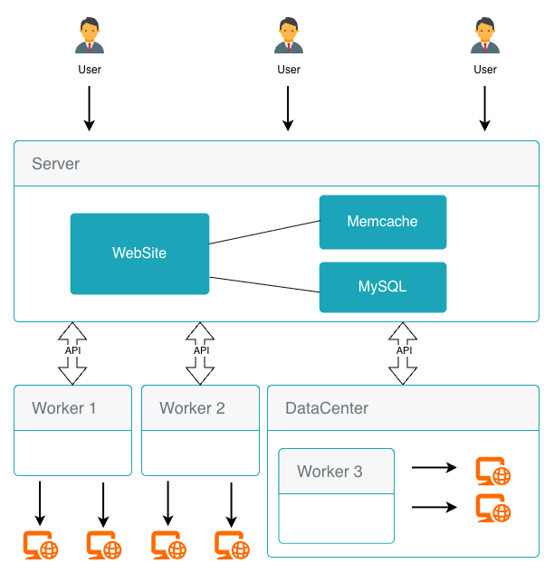
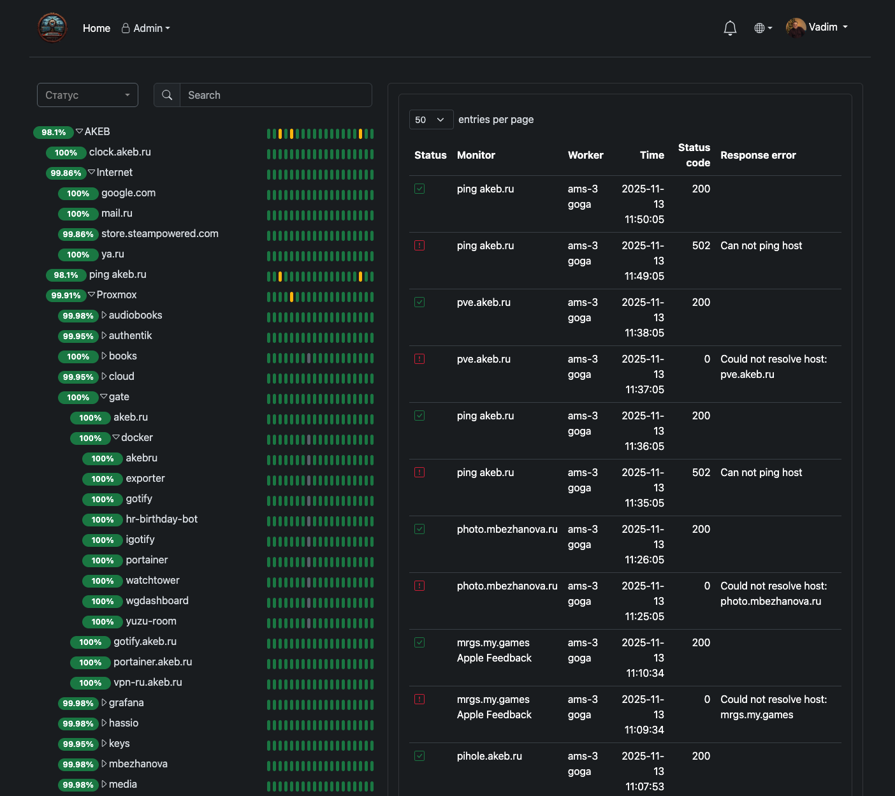
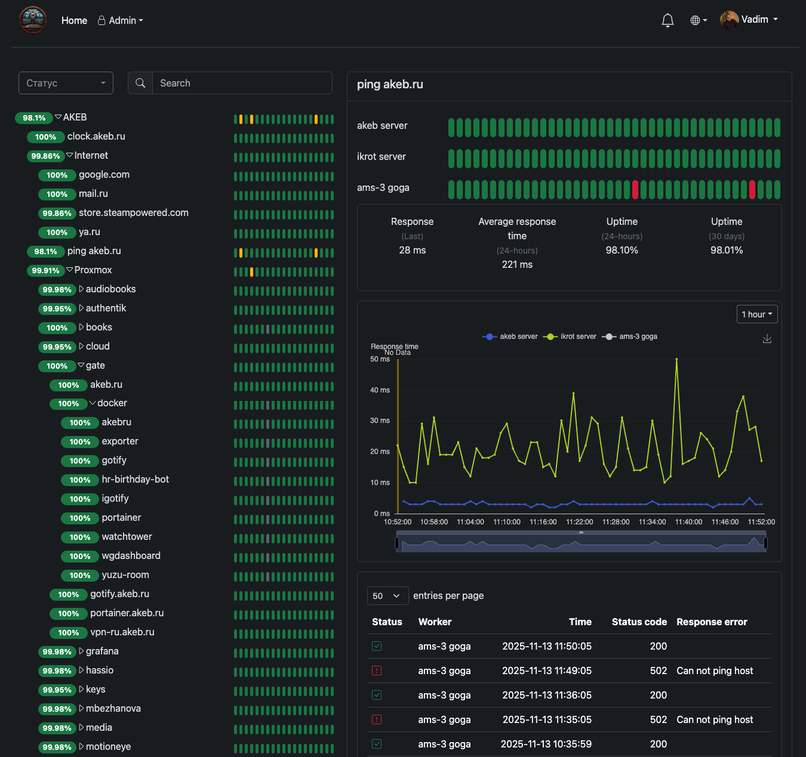

Distributed uptime and host monitoring with a Server, remote Workers, and host Agents. Check HTTP, TCP, Ping, Docker, exporters and server metrics from many regions — and alert without noise.
Open any card for a full feature guide with setup steps and screenshots.
Three roles, one control plane. Details on the architecture page.
akeb/monitoringWeb UI, MySQL, API, alerts, ACL.
akeb/monitoring-worker-goRuns checks from remote locations.
akeb/monitoring-agentPushes host metrics every ~30s.

Live dashboard with uptime bars, response charts and events.


Docker Compose for the server, one container per worker, optional host agents.